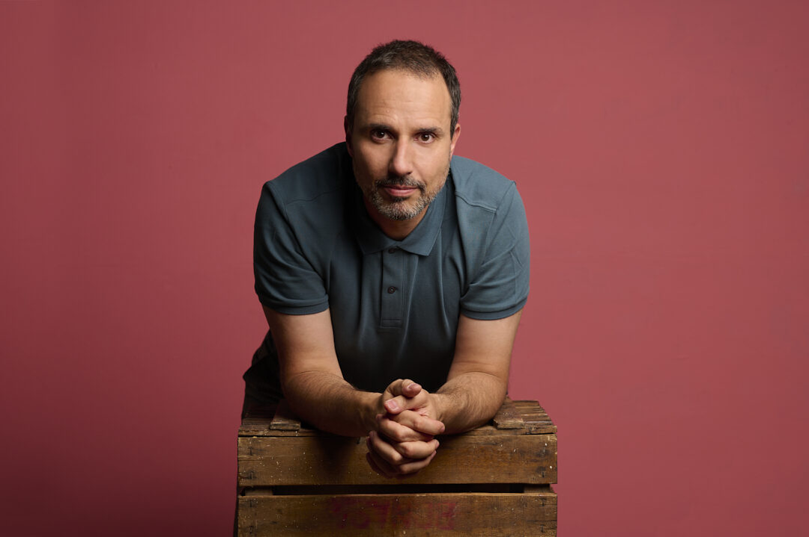

César S. Martín
Barítono
Teatro Real · Teatro de la Zarzuela · Palau de les Arts · Teatro de la Maestranza · Théâtre du Capitole · Teatro Colón de Bogotá · Teatro São Carlos · Maggio Musicale Fiorentino · Teatro San Carlo de Nápoles · Teatro G. Rossini de Pesaro · Teatro Real · Teatro de la Zarzuela · Palau de les Arts · Teatro de la Maestranza · Théâtre du Capitole · Teatro Colón de Bogotá · Teatro São Carlos · Maggio Musicale Fiorentino · Teatro San Carlo de Nápoles · Teatro G. Rossini de Pesaro ·

Mi historia
A los ocho años entré por primera vez en un aula de música, sin saber que aquella tarde cambiaría mi vida. Años mas tarde y después de muchas vueltas buscando, encontré el camino que siempre había estado esperándome.
Sigue leyendoAgenda
Próximas actuaciones
Oratorio de Navidad — Martín Palmeri18–19 dic 2026 · Cracovia, Polonia
Katiuska · Pedro Stakof20–21 nov 2026 · Teatro Gayarre, Pamplona
La Tabernera del Puerto30 jul – 2 ago 2026 · Teatro Colón, Bogotá
Pericca e Varrone — A. Scarlatti10–11 jul 2026 · Festival Ópera a Quemarropa, Aranjuez
Ver agenda completa
Vídeos
En escena
Fragmentos de actuaciones en directo desde algunos de los principales escenarios líricos.
Ver todos los vídeos
Instagram
Sígueme
Últimos momentos en escena, ensayos y novedades de la carrera en tiempo real.